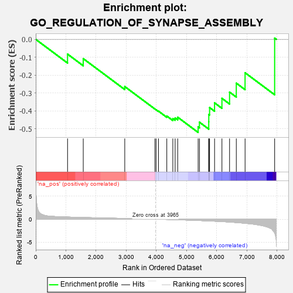
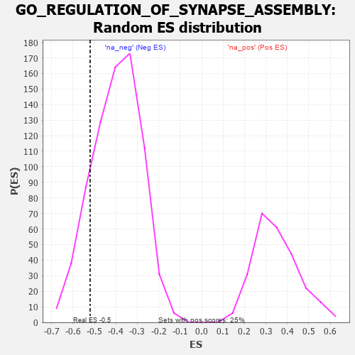

| | | Dataset | 7d |
| Phenotype | NoPhenotypeAvailable |
| Upregulated in class | na_neg |
| GeneSet | GO_REGULATION_OF_SYNAPSE_ASSEMBLY |
| Enrichment Score (ES) | -0.5203056 |
| Normalized Enrichment Score (NES) | -1.3089857 |
| Nominal p-value | 0.15086782 |
| FDR q-value | 0.46395293 |
| FWER p-Value | 1.0 |
Table: GSEA Results Summary

Fig 1: Enrichment plot: GO_REGULATION_OF_SYNAPSE_ASSEMBLY
Profile of the Running ES Score & Positions of GeneSet Members on the Rank Ordered List
| PROBE | GENE SYMBOL | GENE_TITLE | RANK IN GENE LIST | RANK METRIC SCORE | RUNNING ES | CORE ENRICHMENT | | 1 | MEF2C | | | 1054 | 0.473 | -0.0825 | No |
| 2 | FZD1 | | | 1574 | 0.379 | -0.1077 | No |
| 3 | RAB17 | | | 2950 | 0.157 | -0.2640 | No |
| 4 | GPC6 | | | 3950 | 0.002 | -0.3894 | No |
| 5 | VPS35 | | | 3989 | -0.006 | -0.3935 | No |
| 6 | ROBO2 | | | 4066 | -0.018 | -0.4012 | No |
| 7 | SETD5 | | | 4343 | -0.067 | -0.4288 | No |
| 8 | NTRK2 | | | 4543 | -0.104 | -0.4428 | No |
| 9 | DLG5 | | | 4619 | -0.121 | -0.4395 | No |
| 10 | ARF6 | | | 4704 | -0.140 | -0.4353 | No |
| 11 | GRIN1 | | | 5381 | -0.291 | -0.4895 | Yes |
| 12 | MDGA1 | | | 5424 | -0.301 | -0.4630 | Yes |
| 13 | LRFN4 | | | 5733 | -0.387 | -0.4608 | Yes |
| 14 | SLIT1 | | | 5735 | -0.387 | -0.4200 | Yes |
| 15 | TLR2 | | | 5761 | -0.395 | -0.3814 | Yes |
| 16 | LRFN1 | | | 5926 | -0.443 | -0.3551 | Yes |
| 17 | GRID2 | | | 6170 | -0.528 | -0.3298 | Yes |
| 18 | PTPRD | | | 6423 | -0.629 | -0.2950 | Yes |
| 19 | PTPRS | | | 6646 | -0.738 | -0.2449 | Yes |
| 20 | GHSR | | | 6937 | -0.894 | -0.1868 | Yes |
| 21 | ASIC2 | | | 7917 | -2.995 | 0.0068 | Yes |
Table: GSEA details [plain text format]

Fig 2: GO_REGULATION_OF_SYNAPSE_ASSEMBLY: Random ES distribution
Gene set null distribution of ES for GO_REGULATION_OF_SYNAPSE_ASSEMBLY